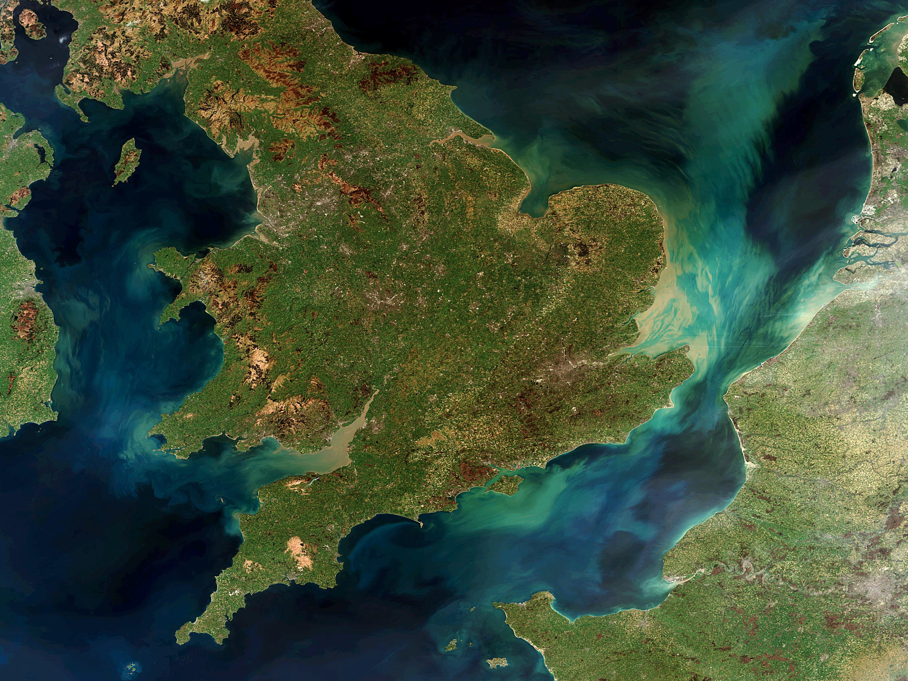

Read more
12, Jul 2019
At first glance there seems to be little connecting Brexit with the search for life on other worlds (beyond, perhaps an impact on the funding of and involvement in that search). However, given time to think on it, odd parallels between the two begin to emerge. Over the three-and-a-bit years since the day of the June 2016 referendum, constant wall-to-wall media coverage of the UK’s plodding, tortoise-like random walk towards leaving the European Union...

Read more
12, Mar 2015
Wine has been with us, in one form or another, for 1000s of years, its origin stretching back to before written records began. When people settled new lands, they brought their vines with them, spreading viticulture across the world. If and when people settle on Mars (an idea that’s gradually moving away from the realms of fantasy and becoming a real possibility) they will almost certainly want to continue this trend. The problem is that...

Read more
3, Oct 2014
On Earth, life has managed to find a foothold in a range of seemingly inhospitable environments. Often the most extreme of environments are solely the domain of microbes; from the hot, high-pressure environments of deep sea vents, to the insides of nuclear reactors, but not always. There are also ice worms that spend their lives in glacial ice, so adapted to the cold that they would melt in your hand if picked up...